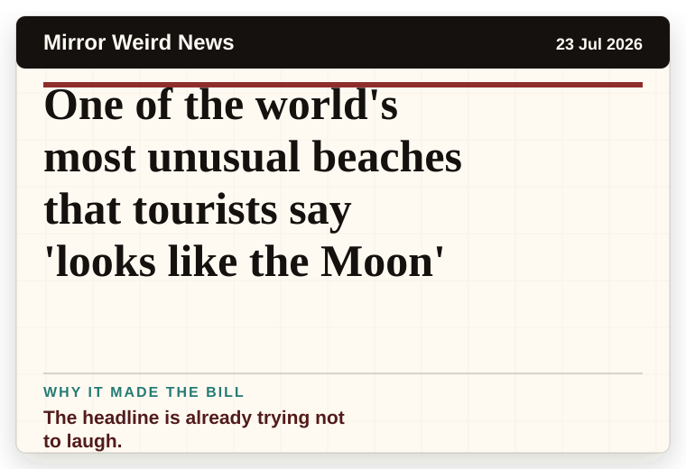
Mirror Weird News
United Kingdom
One of the world's most unusual beaches that tourists say 'looks like the Moon'
The headline is already trying not to laugh.
The latest daily picks, linked back to the original sources. Search the room, pick a source, or follow a headline out to the full story.
Record updated: 27 Jul 2026, 07:52 AM AEST
Showing 14 headline candidates from the refresh run completed on 27 Jul 2026, 07:52 AM AEST.

The headline is already trying not to laugh.
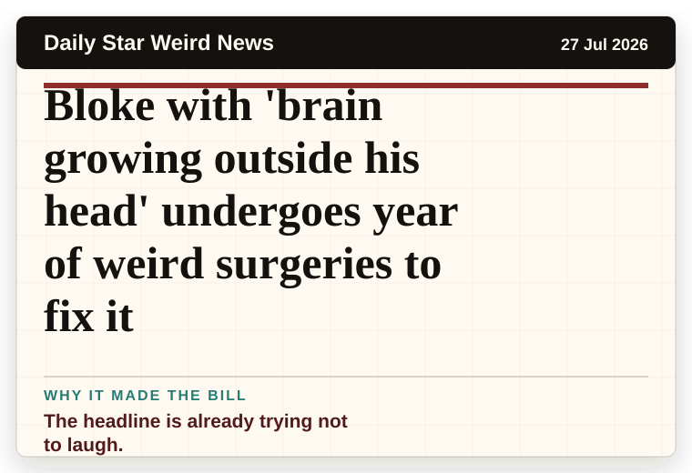
The headline is already trying not to laugh.

A mystery is doing a lot of work in a very small sentence.
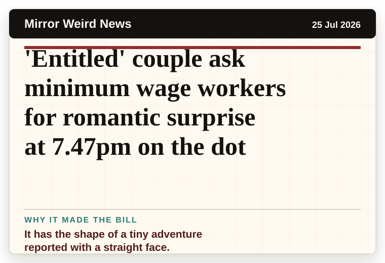
It has the shape of a tiny adventure reported with a straight face.
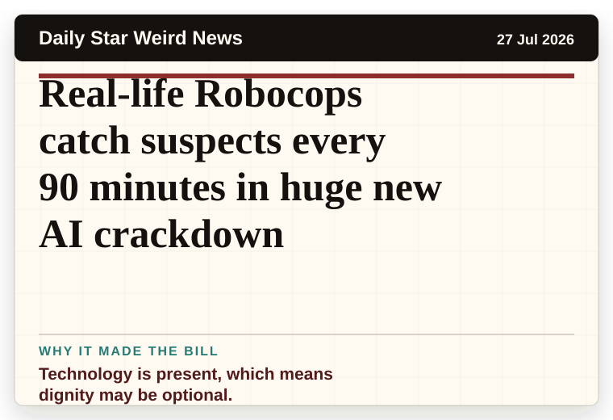
Technology is present, which means dignity may be optional.
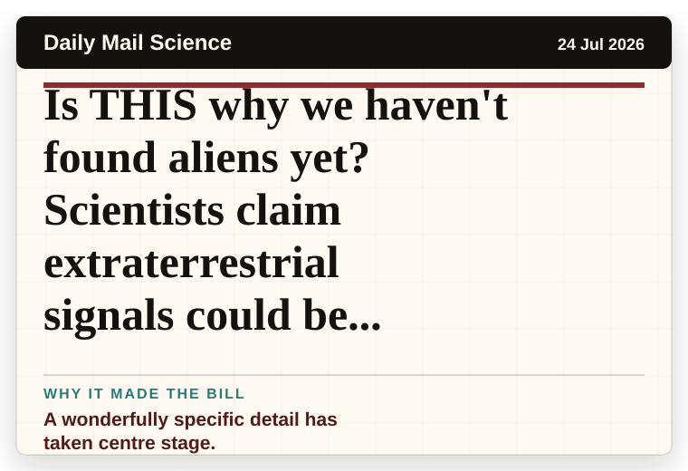
A wonderfully specific detail has taken centre stage.

A wonderfully specific detail has taken centre stage.
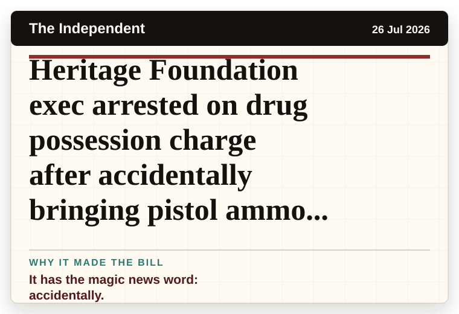
It has the magic news word: accidentally.
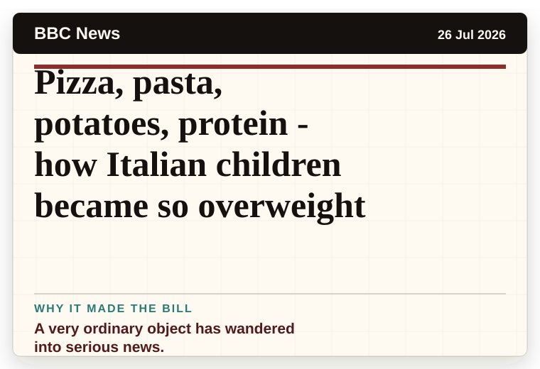
A very ordinary object has wandered into serious news.
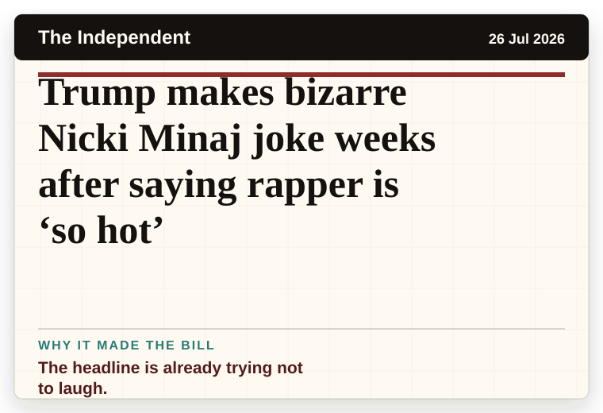
The headline is already trying not to laugh.
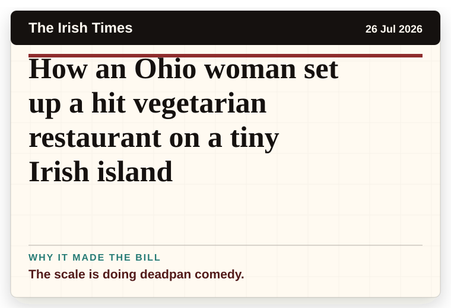
The scale is doing deadpan comedy.
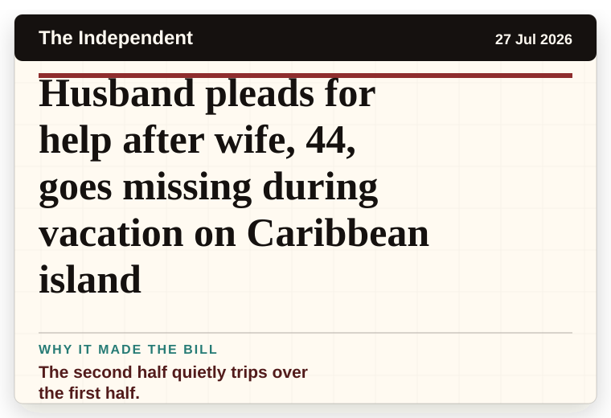
The second half quietly trips over the first half.
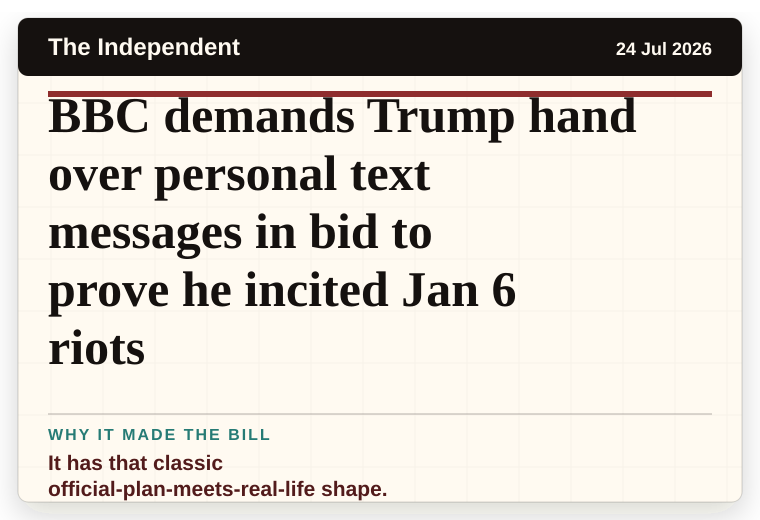
It has that classic official-plan-meets-real-life shape.
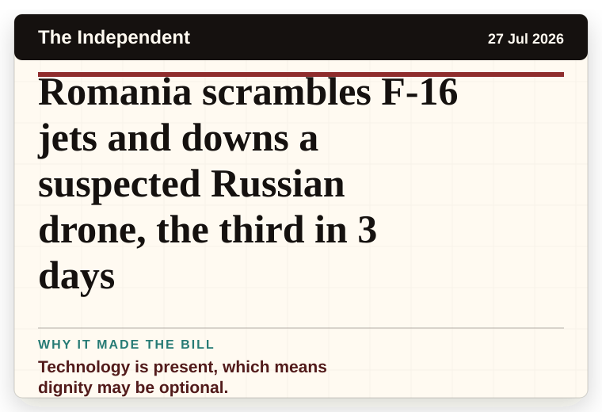
Technology is present, which means dignity may be optional.